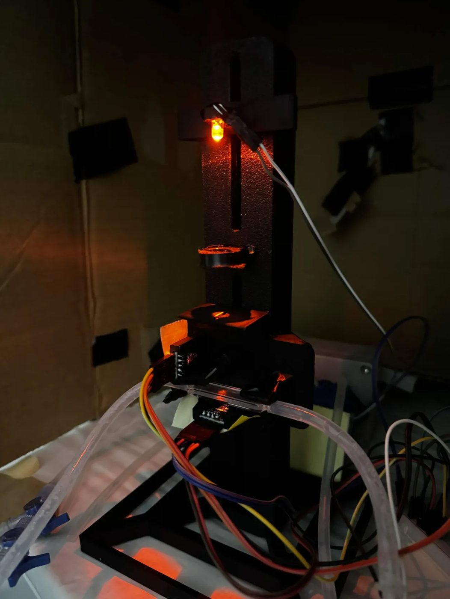
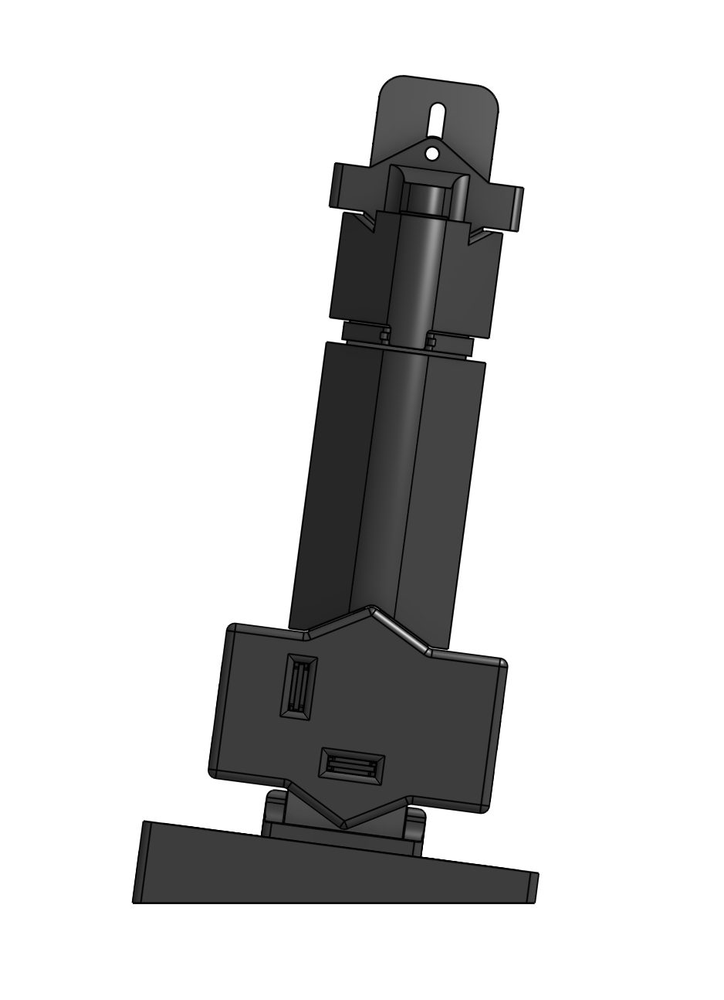
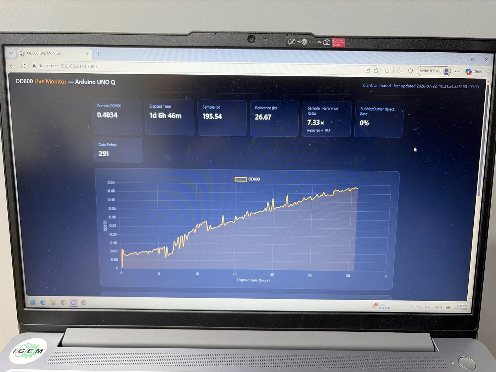

ReLeaf In‑Line
Flow‑Cell Photometer
A subsystem of the ReLeaf bioreactor. It draws culture continuously from the hollow‑fiber lumen loop and passes it through a short‑path flow cuvette in line, so optical density is recorded without withdrawing a single sample and without interrupting the culture.
This document reports the device to the standard of strict reproducibility: a team in another country, with no contact with us, should be able to rebuild it from what follows. Where a specific number, part, or statement must be supplied before publication, it is marked explicitly rather than invented.
Materials and Equipment
1.1 Optical and Electronic Components
ReLeaf is a single-wavelength transmission photometer built around an amber LED, a beamsplitter, a short-path flow cuvette, and two light sensors. Light travels downward from the LED, through a paralleling lens, through a slit, and into a beamsplitter positioned above the cuvette. The beamsplitter diverts a fraction of the beam to a reference sensor before the light reaches the sample; the remaining beam passes through the flow cuvette and lands on the sample sensor.
The full bill of materials is given below, itemized to the individual component with part numbers and unit costs. We follow the granularity used by Bertaux and colleagues in their ClampOD design, whose essential-parts cost of roughly 13 USD is listed part by part rather than as a total. That 13 USD is theirs, not ours — our own total is still being priced. A single figure would not be enough to rebuild from anyway.
| Component | Part number / spec | Qty | Unit cost | Total |
|---|---|---|---|---|
| Amber LED | — peak wavelength nm, FWHM nm | |||
| Jumper wires | ||||
| Reference light sensor | 1 | |||
| Sample light sensor | 1 | |||
| Beamsplitter | — nominal split ratio 90:10 | 1 | ||
| Flow cuvette | — 0.2 mm path length | 1 | ||
| Focusing lens | 1 | |||
| Microcontroller | Arduino UNO Q | 1 | ||
| Passives (resistors, etc.) | — itemized to individual resistor | |||
| 3D prints | All printed components, including the angled stand and TPU lining for close-fitted sensors without any freedom | 8 | ||
| Total essential-parts cost | ||||
The microcontroller is an Arduino UNO Q. Both sensors (GY‑302) report in lux, and the firmware reads them over separate addresses to differentiate sample from reference.
1.2 Fabrication Materials and Tools
The optical bench is a single 3D-printed mount that holds every component in a fixed relationship. Earlier versions allowed each element to be positioned independently along a rail, which was useful during alignment but introduced drift between runs. In the final build, component positions are fixed at their default alignment.
Each mount surface that contacts glass is lined with TPU. This serves two purposes: it grips the cuvette and lens firmly enough that they do not shift under handling, and it prevents the rigid printed material from scratching the optical surfaces. Scratches on a 0.2 mm cuvette window are not cosmetic, because scattering from a damaged surface creates the same imprecise data as scattering from cells, compromising the information in our data.
The light path is enclosed by snap-in covers that follow its full length from LED to sample sensor. These block ambient light from reaching either detector. The function is the same as the O-ring shield used in the ClampOD design, and it exists for the same reason: a photometer that responds to room lighting, or to outdoor day and night, is not measuring the sample.
The whole assembly is mounted on an angled stand with added structural support. The tilt is functional rather than incidental, and is explained in Section 2.1.
- Printer
- Bambu X1C
- Material
- Black PLA, 95A TPU inner lining
- Layer height
- 0.2 mm
- Infill
- 15% gyroid
- Top surface
- 0.25 mm
- Slit width
- 2 mm
Every other setting left at default. The 2 mm slit is wide enough to entirely encompass the sensors while reducing reflected light that could blur the distinction between the sample and reference environments.
1.3 Equipment Used for Data Acquisition
Readings leave the microcontroller and are served to a live web dashboard on the local network, reachable at port 7000 on the device's address. The dashboard displays current OD600, elapsed run time, raw sample and reference readings in lux, the sample-to-reference ratio, the bubble-and-outlier rejection rate, and a running count of logged data points. It plots OD600 against elapsed time in hours and updates continuously without interrupting the run.
The acquisition interval was set to 10 minutes and can run for 300+ hours continuously without failure. The interval can be changed during a test, and a reading can be taken instantaneously at the click of a button. The software rejects points that fall outside the accepted spread; the method for determining that spread is described in Section 2.2.1.
Methods
2.1 Assembly of the ReLeaf Photometer
The instrument was built in four iterations, and each change was made in response to a specific failure. We report the sequence because the reasoning is the useful part.
-
01
Horizontal, fully adjustable
The first build placed the optical path horizontally, with each component independently adjustable on a rail. Readings fluctuated severely.
Cause. Gas bubbles accumulating inside the flow cuvette and passing through the beam; and lens and beamsplitter mounts loose enough that alignment shifted during handling.

Iteration 1 The horizontal rig — every optic independently adjustable on a rail, and bubbles collecting in the flow cuvette. -
02
Vertical, tightened tolerances
The structure was rotated to vertical so bubbles would rise out of the cuvette rather than lodge in the beam path, and component tolerances were tightened. Bubble handling was further improved with a pair of luer valves and syringes that allow gas to be bled from the line directly.
This iteration also corrected a procedural error identified during calibration, described in Section 2.3.

Iteration 2 Rotated vertical, inside a light-blocking box so bubbles rise clear of the beam. Bleeding gas from the line with the dual luer valve and syringe. -
03
Tilted 10°
A vertical channel lets bubbles rise, but a tilted one actively directs them toward the outlet rather than letting them hang against the cuvette wall.
Before≈20%→After8%Percent difference against the Bio-Drop reference on a paired reading — ReLeaf 0.431, Bio-Drop 0.467.
Remaining fault. The LED was not shooting straight. This was fixed in the next build by ensuring the circle of light formed on the 2 mm slit face was centred.

Iteration 3 Tilted on its stand so bubbles are driven toward the outlet rather than hanging on the cuvette wall. The paired reading against the Bio-Drop that gave the 8% figure. -
04
Locked, lined and sealed
The final build locked component positions at their aligned defaults, lined the mounts with TPU, and enclosed the light path in snap-in covers. Distances were chosen from the sliding mechanisms of previous iterations, selecting the most consistent and easily reproduced arrangement. Structural support was added to the angled stand so the tilt angle would not change under the weight of attached tubing.

Iteration 4 The final CAD — locked positions, TPU-lined mounts and snap-in covers along the full light path. The built instrument, covers on, running in the loop. Blank ratio at this build: 9.12×.
Not yet validatedThe 8% above belongs to iteration 3, on one paired reading. This build has been read against the Bio‑Drop once, on the reactor, and came out roughly four times high — traced to a blank taken through a cuvette that cannot be cleaned in line. Hand-entering the blank corrected it and overshot, leaving the instrument 33% low against a target of 10%. One reading, and it did not pass. Three repeats and a dilution series on this build are what would let an accuracy figure be quoted for the final instrument; they have not been run. See notebook, week 20.
Drag to compare any two builds in the same frame and at the same scale.
2.2 Data Acquisition and Optical-Density Conversion
Each sensor returns an illuminance value in lux. The sample sensor reports light transmitted through the culture; the reference sensor reports light diverted before the sample. Reported OD600 is derived from the sample-to-reference ratio, which normalizes each reading against source intensity and thereby corrects for drift in the LED output over the course of a multi-week run.
The conversion from raw sample-to-reference ratio to reported OD600 was established by calibration against the reference instrument (Section 2.4) rather than assumed from first principles. Paired ReLeaf and Bio-Drop readings across a dilution ladder were used to fit the transform, and the resulting relationship was applied to convert live ratio readings into OD600. The fitted transform takes the form:
The fitted equation, including the coefficient(s) and any polynomial or path-length correction term, as determined from the calibration in Section 2.4.
A bubble-and-outlier rejection filter operates on the incoming stream, and the dashboard reports the rejection rate live.
2.2.1 Rejection Filter
We determine the spread by taking 14 lux readings in a short burst. If a bubble drifts past, one or two readings will be far higher than they should be. We cannot use the mean of those 14 readings — it would be dragged upward — so we use the median, which rarely moves. That makes the median a bubble-proof estimate of the true value.
After determining the median, we take the 13 distances of the remaining points from it. The median of those distances tells us how much clean readings wobble: the MAD. If readings are tight, the MAD is low, and the reverse holds. The trick is the same in both cases — taking a median means one giant bubble cannot inflate the spread.
Take 14 lux readings in a burst
Median of the 14 — bubble-proof centre
Median of the 13 distances — the MAD
Reject beyond median ± 3·MAD
Rejected points are removed from the OD measurements, keeping the data clean. We report what fraction of readings are thrown out as the rejection percentage.
- Mean
- —
- Median
- —
- MAD
- —
- Rejected
- —
Set the bubbles to zero and the filter still throws readings away. That is not the demo being wrong — on a burst of only fourteen, the MAD is itself a noisy estimate, so a clean burst loses about one reading in fourteen at our ±3·MAD cutoff, and half of all clean bursts lose at least one. At ±5 it is one burst in ten. Our own notebook records this rate coming out at 0% on one run and 43% on another with the rule never written down, which is the same problem seen from the other end. Slide the cutoff to see where it settles.
2.3 Preparation of the Calibration Standard
The blank is distilled water. This was not what we began with, and the correction matters enough to state plainly. In early work we blanked against growth medium, which produced an offset of roughly 20% against our reference instrument. But the Bio-Drop we validate against is itself calibrated on distilled water. Blanking on medium meant the two instruments were reporting absorbance relative to different baselines, and the disagreement we were attributing to our optics was largely a procedural artifact. Switching to distilled water aligned the baselines.
2.3.1 Full calibration-standard protocol
-
Blank
The blank is distilled water, prepared identically for both instruments. Using distilled water as a common blank aligns both instruments to the same zero, so that any residual difference reflects instrument response rather than a baseline mismatch. The blank was re-read on each instrument at the start of every calibration session.
-
Pairing and timing
For each ladder point, the ReLeaf reading and the Bio-Drop reading were taken back-to-back within 30 seconds on the same mixed sample. This interval is short enough that culture settling and growth between the two readings are negligible, so each paired point compares the two instruments on effectively identical sample states without requiring chemical fixation.
-
Calibration
To the commercial photometer, as described in Section 2.4.
2.4 Calibration and Comparison to a Commercial Photometer
ReLeaf is validated against a Bio-Drop cuvette spectrophotometer, which serves as the reference instrument throughout this wiki. Calibration was performed under the same flow-cell geometry used during live measurement, so vessel and path-length differences do not bias the fit — the device is calibrated in the exact configuration in which it measures.
Reading acquisition
At each ladder point, the ReLeaf sample and reference sensor outputs (in lux) were recorded, and raw absorbance was computed directly from these as −log₁₀(sample / reference). The −log₁₀ transform is applied once, to the raw lux ratio, so the calibration operates on a true single-transformed absorbance rather than a value that has been log-transformed twice. The paired Bio-Drop OD600 was recorded within the 30-second window described in 2.3.
Fitting
The calibration maps ReLeaf raw absorbance (x) to Bio-Drop OD600 (y) across an 11-point ladder. The ladder is a set of points taken on the growth curve of our bacteria as measured by the photometer, with samples extracted for testing on the Bio-Drop. Rather than assume a constant ratio between the instruments, we fit a continuous function so non-constant differences across the range are absorbed by the calibration. Candidate fits were evaluated in order of increasing complexity — linear, then second-order polynomial — and the simplest form whose residuals showed no remaining structure was selected. The chosen calibration function is:
fit over the range OD600 to , with points.
Goodness of fit
Residuals were plotted against x and showed no systematic curvature, indicating the selected function form captures the relationship rather than masking a remaining nonlinearity. Percent difference, where reported, is computed relative to the Bio-Drop value.
Check the residual claim against the actual residual plot before publishing.
Validation on held-out data
Planned, not yet run. Whether the calibration generalizes to readings it was not fit to is the property that actually matters for live monitoring, and it is the step still outstanding. The procedure is fixed: collect a separate set of paired ReLeaf / Bio-Drop readings across the working range, hold them out of the fit entirely, then apply the function fitted on the training ladder and report RMSE and R² against the Bio-Drop values. Only if accuracy holds on data excluded from fitting can the calibration be said not to be overfit to the training ladder. Those numbers are not in the record yet, so no claim about generalization is made here.
Application
The calibration function is applied to every subsequent ReLeaf reading to convert raw absorbance to reported OD600, including all values shown in the continuous growth curve. It is a fit to the training ladder, and should be read as such until the held-out validation above has been run.
2.4.1 Comparison to a commercial cuvette spectrophotometer
Planned, not yet run. The comparison to report here is agreement between the calibrated ReLeaf output and the Bio-Drop across the calibrated range — RMSE and R² on the training ladder, and RMSE again on the independent held-out set. Until those values exist, this page makes no claim about how closely the two instruments agree.
The early single paired reading collected before the full ladder existed — ReLeaf 0.431 against Bio-Drop 0.467, a 7.7% difference relative to the Bio-Drop value — is consistent with the calibrated agreement, and is reported here only as the initial observation that motivated the full calibration.
2.7 Growth Curve Procedure (B. subtilis)
The continuous growth run was performed on a simplified circulation loop rather than the full bioreactor. Culture was held in a stirred reservoir and pumped through tubing to the ReLeaf flow cell and back, giving the path reservoir → pump → flow cell → reservoir. No hollow-fiber module was present in this loop, so the record in Part 3 reflects the photometer measuring a circulating culture, not the integrated bioreactor.
Aeration was passive. A single port in the reservoir, fitted with a circular plate and membrane, exchanged gas with room air; no sparging or active gas supply was used. The run was held at approximately 23 °C, and both the stirrer and pump were set to maximum for its full duration.
- Aeration component part number and membrane specification
- Confirmation of 23 °C, and whether controlled or ambient
- Stir rate in rpm and pump flow rate in mL/min, with make and model of each
- Growth medium, working volume, and inoculum density at t = 0
Results
Results follow the three-panel logic used in the reference literature: raw signal over time, then calibration against the reference instrument, then the converted growth curve.
3.1 Raw Signal Over Time
3.2 Other Parameters to Consider
This section documents artifacts and instrument behaviour observed during the continuous run. Several remain open, and we report them as findings rather than omitting them.
Fouling
Highest priorityNo fouling measurement has yet been made. Given a 0.2 mm channel and a run exceeding seven days, this is a significant and deliberately acknowledged gap. The planned measurement is a flush-and-reblank: flush the cell with distilled water at the end of a run, re-read the blank, and report the drift in OD units. This must be done before a run is torn down, as it cannot be recovered afterward.
We have not found a comparable measurement in prior iGEM hardware work, so this is both the largest hole in our validation and, if it holds up, a contribution.
Measurement.
Temperature
OpenNo thermal characterization has been performed. Well-built photometers of this class show measurable blank drift and require acclimation before readings are trusted.
A statement of our thermal control or the explicit absence of it, and a thermal-drift measurement if warranted.
Linearity across the full range
OpenSignal is tight below roughly OD 0.4 and becomes visibly ragged above roughly 0.8. The upper portion of the reported range may therefore lie outside the linear regime; this is examined once the full dilution ladder in 3.1 is complete.
The linear range as a number, from 3.1.
Continuous illumination
NoteThe LED is on throughout the run. This is noted for completeness; the amber wavelength lies outside the actuation range of the light-responsive systems used elsewhere in the project.
That continuous amber illumination does not interact with any optogenetic system present.
3.5 Continuous Growth Curve (B. subtilis 168, 336 h)
A continuous in-line record spanning 336 hours and 2132 logged points, captured without removing a single sample. We have not found a comparable continuous in-line OD record in prior iGEM hardware work, but we have no surveyed figure to cite, so we make no claim about the margin.
Traced from the live dashboard at 14 d 0 h 11 m — 336 h, 2132 points. The band is the raw scatter, the line its median. Traced endpoint OD600 1.392 against 1.3864 shown on screen — a 0.4% check on the trace.


The dip is the interesting part. Our first explanation was contamination — a second organism taking over — and it was wrong. The recirculation pump had failed, which Chars confirmed on inspection before replacing it. The wrong guess stays in the notebook rather than being quietly corrected, because the instrument earning its keep is the point: the failure happened with nobody watching, and the trace caught it. What optical density alone still cannot separate is lysis from sporulation or settling, so the decline is reported as observed, not as a death phase. The flush and reblank that would have told fouling from biology was never run — once the rig was torn down the chance was gone.
3.5.1 Learnings
The aim of this run was to test the ability of B. subtilis to grow within the constraints of our system — the compatibility of our bacteria with the rate of our stirring mechanism, pump, medium, and dissolved oxygen. To isolate that test, we avoided sampling any bacteria from the solution for Bio-Drop measurement. That choice also prevented us from projecting our measured data points onto real optical density, which we must do to ensure accuracy, since past measurements ran around 8% off reality.
We planned to extract data points on the downward decline, assuming a repeating cycle of growth and death. The data on the way back down was not entirely smooth, which forced another B. subtilis growth test to give us more accurate values.
3.6 Growth-Curve Calibration Series (B. subtilis 168, 11 points)
To determine accurate values for our photometer readings, we designed the following experiment to sample 11 different data points along the growth curve of B. subtilis inside our bioreactor system. This allows us to project our measured values onto reality in order to improve accuracy.
3.6.1 Learnings
A grab sample — Bio-Drop reading, wet mount, and plate count — taken at the culture state corresponding to the decline, to establish what the culture is doing and anchor the later portion of the curve against an independent measurement. The decline should be presented as an observed decline in optical density with candidate explanations (lysis, sporulation, settling, drift) rather than labelled a death or degradation phase from optical density alone, since OD cannot distinguish these and sporulation is a live possibility for B. subtilis at that stage.
Discussion and Future Implications
4.1 What the Device Does Well
Our photometer delivers continuous in-line optical-density measurement from the lumen loop of a running bioreactor, with no sampling event and no disturbance to the culture. It is built from an amber-LED transmission design intended for the 600 nm region, a 0.2 mm flow path chosen specifically to extend the high-density working range, and a dual-beam reference arrangement that corrects for source drift. This hardware is an implementation of exactly that stated solution, at a cost accessible to a student team.
What the evidence supports is a continuous in-line optical-density record of 336 hours taken with no sampling event, and an instrument that caught a pump failure unattended and logged straight through it. What it does not support is a textbook growth curve: the trace shows no exponential phase and no plateau, a growth rate that fell away steadily and a rebound part way through, and that shape is recorded in the notebook as still unexplained. The instrument's claim is the record it kept, not the biology it happened to capture.
4.2 Limitations and Sources of Error
Fouling
Unmeasured, and the geometry makes it a live risk. A 0.2 mm channel offers a high surface-to-volume ratio, and a B. subtilis culture over seven days is a realistic biofilm scenario. This is a limitation now, and becomes a finding once the flush test is done.
Thermal sensitivity
Uncharacterized. Even well-built photometers of this class drift and require thermal acclimation.
Physics of the measurement
Beer–Lambert linearity degrades at high scattering density regardless of instrument quality. ReLeaf inherits this constraint; a short path extends the usable range but does not remove it.
Each limitation is stated with its magnitude or mitigation where known, and each maps to a specific item in Future Work.
What this instrument has actually shown
Everything below is either measured on this build or it is not.Demonstrated
- 336 h of continuous in-line OD, 2132 points, with no sample withdrawn and nobody present. Traced from the dashboard · 3.5
- Ratiometric referencing works. At hour 30 the reference held at 26.67 lx while the sample fell — source drift divides out. Figure, hour 30
- The instrument caught a hardware failure unattended. The recirculation pump died mid-run and the trace showed it. Notebook, week 22
- Two blanking faults found and corrected, the second by hand-entering the blank when the cuvette could not be cleaned in line. Weeks 18 and 20
Not established
- Accuracy of the final build. One paired reading against the Bio‑Drop, 33% low, and it did not pass. The 8% figure belongs to iteration 3. Week 20 · needs three repeats and a ladder
- Linearity. Doubling the TiO₂ moved OD from 0.3712 to 0.5785, not to 0.7424. Week 19 · no dilution series run
- The rejection rule. Reject rate has read 0% and 43% on different runs and the rule is not written down anywhere. Week 21 · see the demo in 2.2.1
- Fouling over a long run. Never measured; the flush and reblank that would separate fouling from biology was never run. Week 22 · the rig was torn down first
- The optics as designed. Sample-to-reference sits at 7.33× against a beamsplitter specified at 10×, unexplained. Week 21, table 21
4.3 Comparison to Existing Approaches
| Approach | Strength | Limitation |
|---|---|---|
| Benchtop cuvette spectrophotometry | The accuracy reference, and what we calibrate against | Operational rather than optical — every reading removes material from the culture: disruptive, discontinuous, impractical overnight |
| Immersed probes | Continuous readings without withdrawal | Occupy vessel volume, complicate sterilization, generally expensive |
| Clamp-on external sensors (ClampOD) | Attach to existing tubing; simple and cheap | Path length fixed by whatever tubing is already present — precisely the constraint that limits high-density accuracy |
| Commercial in-line monitors | Solve the problem well | Priced out of reach for most student teams |
| ReLeaf | Continuous in-line measurement at a short, chosen 0.2 mm path length, at student-project cost | Does not replace a benchtop reference; calibrated against one, and bounded by the same scattering physics |
4.5 Broader Implications
Manual sampling produces a handful of points across a working day. By day eight of the run above, this device had logged 1244, with nobody present.
A photometer that reads continuously, sits in line with a running culture, and costs what a student team can afford changes what kind of experiment is possible outside a well-funded lab. The difference is not resolution alone — it is the ability to observe phases of culture behaviour that occur overnight, over weekends, and across the multi-day timescales where slow processes actually happen.
The wider value depends on release. We publish the bill of materials, the CAD files and the firmware, along with this validation record — including the parts that remain unresolved. So the BOM, the CAD, the firmware and this record all go out together, unresolved items included. Without the files nobody can rebuild it, and a record listing only what worked is not much use to anyone.
That CAD, BOM and code are actually published, with links. This paragraph is not earned otherwise.
Prior work, and what is ours
In‑line optical density on a low budget is not new. The closest published design is ClampOD by Bertaux and colleagues, which is where the parts‑level costing style used in this record comes from, and which we measured ourselves against in 4.3. The ratiometric idea — splitting a reference off the source so LED drift divides out — is standard practice in photometry rather than something we invented.
What is ours: the 0.2 mm flow cuvette geometry and the tilted column that clears bubbles from the beam, the printed optical rail and its four iterations, the blanking procedure that came out of getting it wrong twice, and the burst‑median rejection filter. The Arduino, the sensors and the LED are bought parts.
A full citation with DOI for ClampOD, and for any prior iGEM in‑line OD work the 16 hour comparison in 3.5 is measured against — that figure currently has no source on this page.